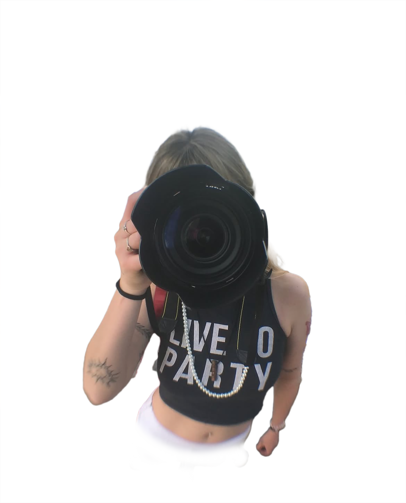
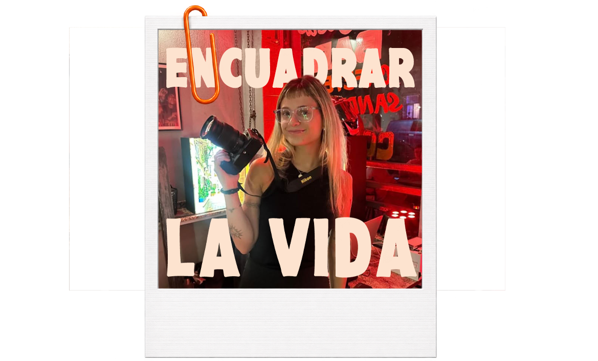

01
Bodas & uniones
Desde los preparativos hasta los abrazos de la fiesta. Un relato cercano de un día que lo cambia todo.
Consultá por tu fecha
VICTORIA CHIARA
TU FUTURA PH
LO ESPONTÁNEO · LO IMPERFECTO · LO QUE SE SIENTE

01 / SOBRE MÍ
Creo en las fotos que te hacen volver a ese abrazo, a esa risa y a todo lo que pasa cuando te olvidás de la cámara.
Mi forma de trabajar empieza por conocerte. Te acompaño de cerca y observo con calma, para que disfrutes tu evento mientras guardo lo que lo hace único.
No busco momentos perfectos. Busco los tuyos.
CONOZCÁMONOS02 / HISTORIAS EN IMÁGENES
Pequeños fragmentos de días enormes, elegí una historia y mirala de cerca
03 / CÓMO TRABAJO
Cada evento tiene su ritmo, la cobertura también
Desde los preparativos hasta los abrazos de la fiesta. Un relato cercano de un día que lo cambia todo.
Consultá por tu fechaCumpleaños, quince y encuentros que reúnen a quienes más querés. La energía de la fiesta, en imágenes.
Contame qué celebrásEncuentros, lanzamientos y experiencias de marca. Una cobertura cuidada y alineada con tu identidad.
Hablemos de tu proyectoMe contás tu idea, la fecha y lo que imaginás. Juntas definimos una cobertura a tu medida.
Te acompaño con una mirada atenta y discreta, dejando que los momentos sucedan.
Recibís una selección editada en una galería digital. Plazos y detalles acordados antes del evento.
05 / EMPECEMOS UNA HISTORIA
¿Querés que trabajemos juntos? Contame la fecha, el lugar y la idea de tu evento en el formulario. Al terminar, vas a pasar a nuestro chat de WhatsApp con la consulta lista para enviar.